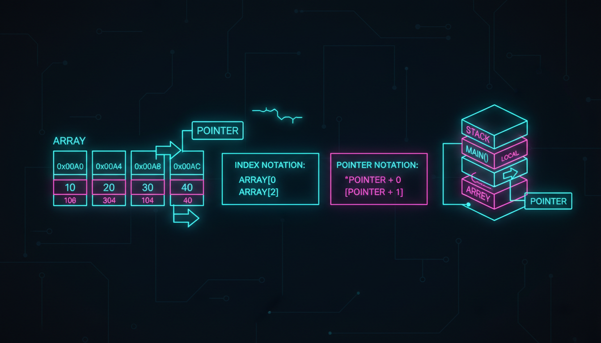

Взаємозв'язок вказівників і масивів, передача масивів

У C++ ім'я масиву є вказівником на його перший елемент. Масиви та вказівники тісно пов'язані.
#include <iostream>
int main() {
int arr[] = {10, 20, 30, 40, 50};
int* ptr = arr;
// Еквівалентні способи доступу:
std::cout << arr[2] << std::endl; // 30
std::cout << *(arr + 2) << std::endl; // 30
std::cout << ptr[2] << std::endl; // 30
std::cout << *(ptr + 2) << std::endl; // 30
// Перебір через вказівник
for (int* p = arr; p < arr + 5; p++) {
std::cout << *p << " ";
}
std::cout << std::endl;
return 0;
}